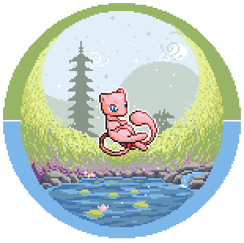
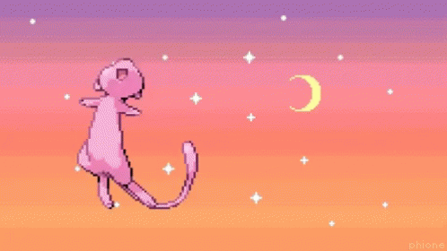
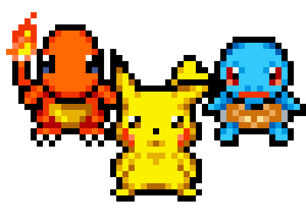
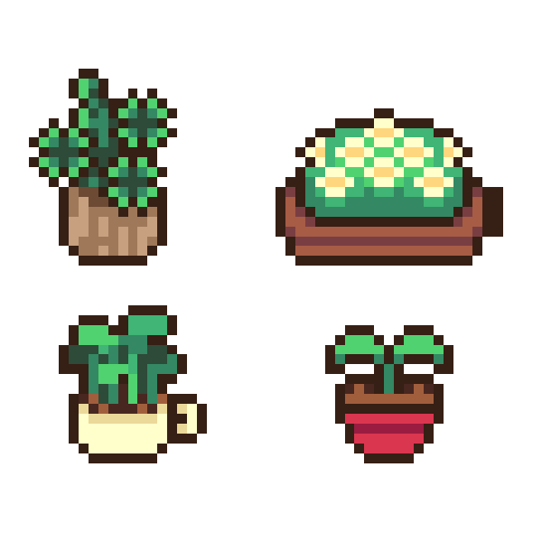
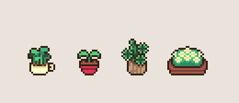

⭐ Mis Apuntes
::: pagina de prueba para ver los adornos :::
» Galeria de adornos «
Cada bloque es un elemento tipico de una pagina shrine de
los 2000. El codigo esta en este archivo y en estilos.css
(seccion "ADORNOS ESTILO SHRINE").
1. Separador candy
Reemplaza al <hr>. Es CSS puro, sin imagen, y se mueve.
2. Marquesina de texto
El viejo <marquee>, hecho con animacion de CSS.
3. Contador de visitas
Funciona de verdad, pero cuenta por navegador (guarda el numero en
localStorage): no es un total global de todos los visitantes.
Visitas: 00000
4. Novedades
- 2026-08-29 — Agregue los apuntes de Jenkins.
- 2026-08-24 — Nacio la web 2.0.
5. Cajita de estado
La ves en el menu de la izquierda. Sirve para contar que estas escuchando, leyendo, tu animo, etc.
6. Blinkie
Un badge parpadeante, sin imagen.
★ Best viewed with imagination ★ Pikachu approved7. Caja de webring
8. Todos los GIFs de la carpeta gifs/
Los 9 gifs que tenes ahora mismo, a 150px. Se pueden usar como separadores entre secciones, adornos en el menu, etc.









9. Planta como "estado de la nota" (jardin digital)
La misma idea del 🌱 / 🌿 / 🌳 pero con tus gifs: marcar si una nota es semilla, esta creciendo o ya esta madura.
- Docker — semilla (todavia no la empece)
- Jenkins — creciendo (la estoy escribiendo)
- HTML basico — madura (ya la entiendo bien)